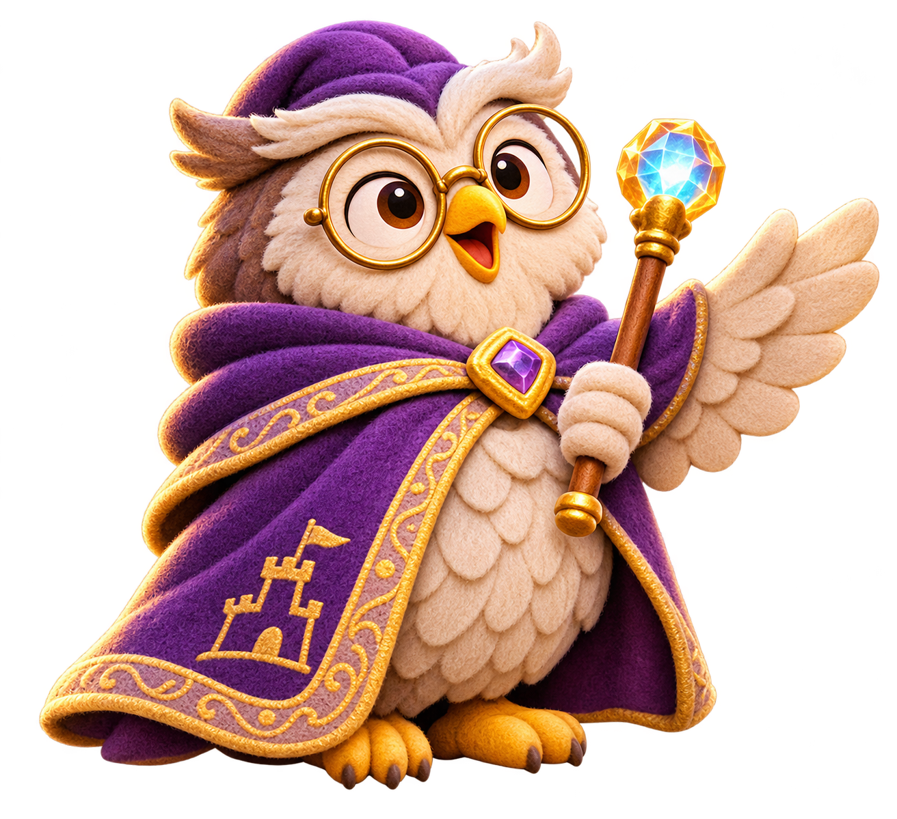
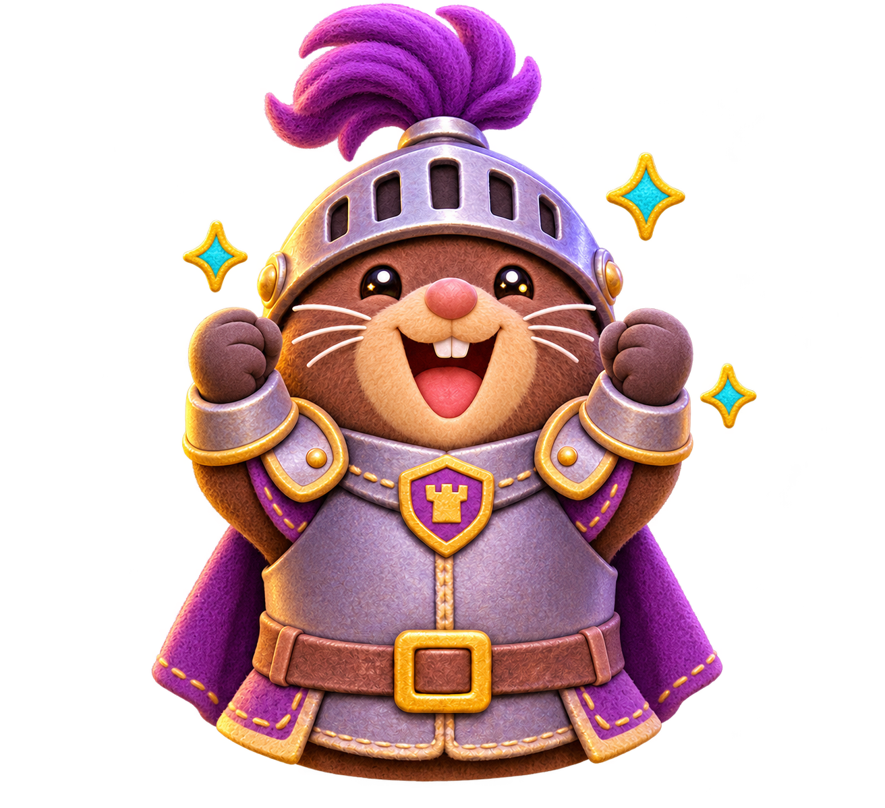

C usually sounds like /s/ before e, i, or y.
c 在 e、i、y 前面通常發 /s/。cent · city · cyclePHONICS CASTLE ADVENTURE
Castle CThe Sound Crystal Quest
Restore the two sound crystals and save the castle! 找回兩顆聲音水晶，拯救 C 城堡！
SOFT C /s/柔音 c
HARD C /k/硬音 c
THE CRYSTAL TRAIL
Castle Map 城堡地圖
◆ ◆ ◆
◆ ◆ ◆

Choose a tower to begin.選擇已解鎖的關卡開始挑戰。
♥ ♥ ♥ ♥ ♥
⏱ 45
★ 0/8
★ ★ ★
Crystal Restored!
聲音水晶恢復力量了！

8/8Correct｜答對
100%Accuracy｜正確率
0Listens｜聆聽